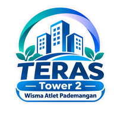

Hapus Akun Teras Tower 2
Aplikasi warga Tower 2 Wisma Atlet Pademangan
Cara menghapus akun
- Buka aplikasi Teras Tower 2 (Android, iPhone, atau versi web bila aplikasi sudah dihapus dari HP).
- Masuk dengan username dan PIN Anda.
- Buka Menu → Profil Saya, gulir ke bawah, lalu ketuk Hapus akun saya…
- Masukkan PIN, ketik HAPUS, lalu konfirmasi.
Akun langsung terhapus saat itu juga.
Lupa PIN? Gunakan Lupa PIN di halaman masuk, atau hubungi pengurus Tower 2 lewat grup WhatsApp warga. Pengurus akan memverifikasi bahwa akun itu milik Anda sebelum menghapusnya.
Data yang dihapus
- Akun: username, PIN (tersimpan sebagai hash), nama, nomor WhatsApp, status hunian, lantai, dan unit.
- Sesi masuk di semua perangkat dan token notifikasi.
- Tempat yang Anda simpan di Jelajah Sekitar, permintaan reset PIN, dan status baca notifikasi.
Data yang tetap disimpan tanpa identitas Anda
- Aspirasi, rekomendasi dan ulasan Jelajah Sekitar, masukan aplikasi, skor kepuasan, dan usulan agenda yang pernah Anda kirim. Isinya tetap menjadi catatan pengelolaan gedung dan bagian dari informasi bersama warga, tetapi nama, username, nomor WhatsApp, dan unit Anda dihapus. Penulisnya tampil sebagai “Warga (akun dihapus)”.
- Catatan keamanan (log aktivitas) disimpan untuk mencegah dan menelusuri penyalahgunaan.